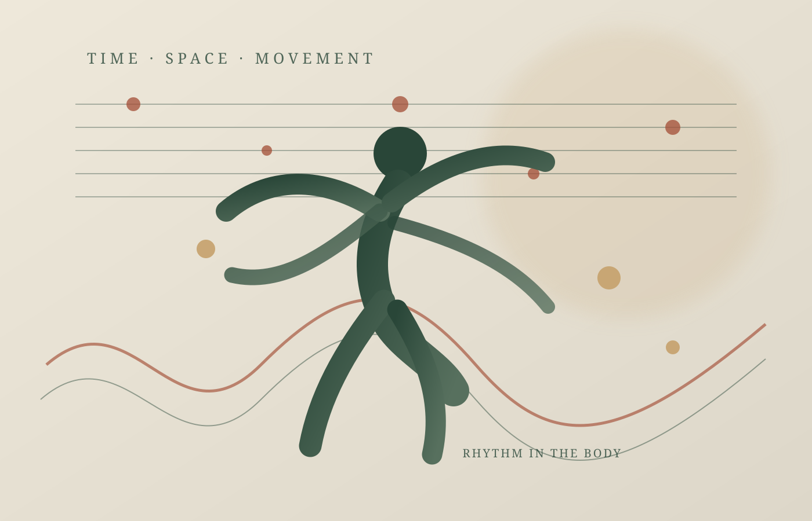
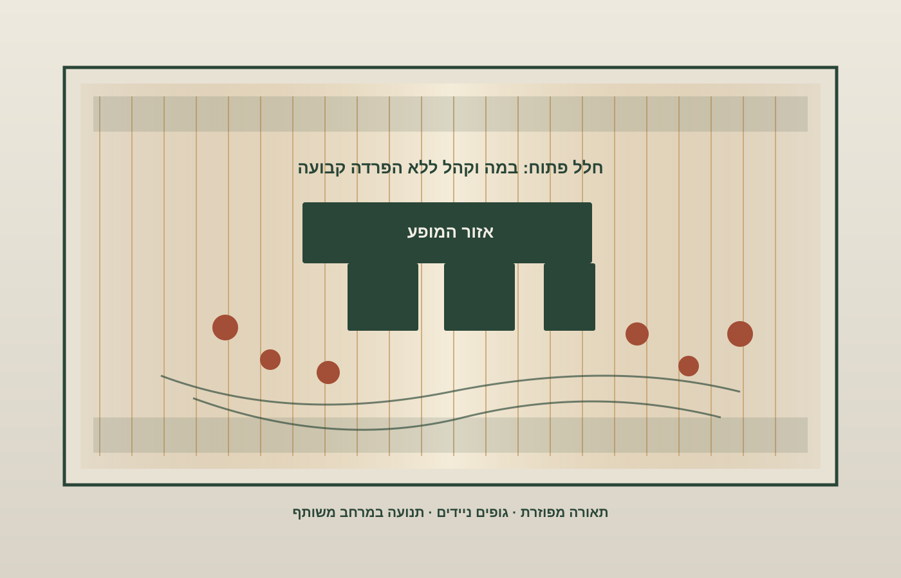

מוזיקה · חינוך · תיאטרון · מדעי המוח
ללמוד מוזיקה ברגליים: האיש שביקש ללמד קצב לפני תווים
אמיל ז'אק־דלקרוז ביקש להפוך את הגוף לכלי נגינה: לא רק לשמוע את הקצב, אלא ללכת אותו, להרגיש אותו וליצור מתוכו. הרעיון הזה יצא מכיתת לימוד בז'נבה והגיע אל אחת המעבדות הנועזות של המודרניזם האירופי.
דמיינו תלמיד שיודע לקרוא תווים, מזהה סולמות ואקורדים, ומנגן את התרגיל בדיוק סביר — אבל המוזיקה שלו נשמעת כאילו מישהו הרכיב אותה מחלקים נפרדים. הוא יודע מה כתוב בדף, אך אינו מרגיש כיצד המשפט המוזיקלי נושם, היכן הוא נעצר, מתי הוא ממהר ומתי הוא מתרחב. זה אינו תיאור של תלמיד מסוים, אלא הבעיה החינוכית שממנה אפשר להבין את מפעלו של אמיל ז'אק־דלקרוז: מה אם הדרך ללמוד מוזיקה אינה מתחילה בסימנים שעל הדף, אלא בתנועה של הגוף?
ז'אק־דלקרוז (Émile Jaques-Dalcroze, 1865–1950) היה מלחין ומחנך מוזיקלי שווייצרי, שפיתח שיטה שבה מקצב, משקל, פראזה, עוצמה וצורה מוזיקלית נלמדים באמצעות תנועה, הקשבה ואילתור. במבט ראשון זה נשמע כמעט מובן מאליו: הרי אנשים ממילא מקישים ברגלם למוזיקה, מנענעים את הראש או מתופפים באצבעות. אלא שדלקרוז ביקש להפוך את התגובה האינטואיטיבית הזאת לשיטה פדגוגית שיטתית — לא קישוט לשיעור מוזיקה, אלא דרך לבנות הבנה מוזיקלית.

מן הקונסרבטוריון אל הגוף
דלקרוז נולד בווינה ב־1865 למשפחה שווייצרית, וכעבור כעשר שנים עברה משפחתו לז'נבה. הוא למד מוזיקה בז'נבה, בפריז — בין השאר אצל ליאו דליב וגבריאל פורה — ובווינה אצל אנטון ברוקנר. ב־1892, בגיל 27, מונה למורה להרמוניה בקונסרבטוריון של ז'נבה. דווקא בתוך מוסד מוזיקלי מסורתי החל לפקפק בדרך שבה לימדו מוזיקה: תלמידים יכלו ללמוד את כללי ההרמוניה, אך לא תמיד הצליחו לשמוע בדמיונם את מה שכתבו, או לתת לנגינה תחושת קצב חיה. הביוגרפיה של המכון הבינלאומי על שמו מתארת את השנים 1892–1910 כתקופה שבה פיתח בהדרגה פדגוגיה המבוססת על מוזיקליות של תנועה ואילתור; גם Dalcroze USA מספר על ניסיונותיו לשפר את השמיעה הפנימית ואת החיוניות הקצבית של תלמידיו.
הפתרון שלו לא היה להוסיף עוד הסברים תיאורטיים. הוא ביקש מהתלמידים ללכת, לעצור, לשנות כיוון, להניע זרועות, למחוא כפיים או להגיב בתנועה לשינויים שהוא אילתר בפסנתר. אם המוזיקה האיצה, הגוף נדרש להאיץ; אם הופיעה הפסקה, התנועה נעצרה; אם המשפט המוזיקלי התרחב, גם המחווה יכלה להיפתח. כך נעשה הקצב לחוויה שאפשר לחוש ולבצע, ולא רק למושג שאפשר להגדיר.
השיטה מכונה ריתמיקה של דלקרוז (Dalcroze eurhythmics). היא אינה מסתכמת בהליכה לפי פעימות. שלושת ענפיה המרכזיים הם ריתמיקה, סולפז' ואילתור. בריתמיקה הגוף חוקר את היחסים בין פעמה, משקל, חלוקה, פראזה, עוצמה ומרקם. הסולפז' — אימון שמיעה וקריאה מוזיקלית — מפתח את היכולת לשמוע צלילים והרמוניות בדמיון, לקרוא אותם ולשיר אותם. האילתור, בקול, בתנועה או בכלי נגינה, בודק אם הלומד מסוגל להשתמש בשפה המוזיקלית באופן חי וגמיש. שלושת הענפים אינם שלבים מנותקים; הם אמורים להזין זה את זה. ההסבר של אגודת דלקרוז האמריקאית מפרט את תפקידו של כל ענף.
ההבדל בין השיטה לבין שיעור התעמלות לצלילי פסנתר הוא עקרוני. המורה אינו מבקש מן התלמיד לבצע תנועה יפה או להעתיק מחווה של רקדן. הוא בונה מצב שבו שינוי מוזיקלי מחייב תגובה גופנית, והתגובה הזאת חושפת משהו על המוזיקה. הליכה יכולה להמחיש פעמה קבועה; שינוי פתאומי של כיוון יכול לחדד את תחושת החלוקה; עצירה יכולה להפוך את השתיקה לאירוע פעיל. התלמיד לומד להבחין בין מה שהוא שומע, מה שהוא מצפה לשמוע ומה שהגוף שלו עושה בפועל.
המוח אינו מאזין מן הצד
כאן נוצר קשר מעניין בין דלקרוז לבין אחד הכיוונים החשובים במדעי הקוגניציה: קוגניציה גופנית (embodied cognition), הרעיון שלפיו חשיבה ותפיסה אינן מתרחשות רק במוח מנותק, אלא נשענות גם על פעולות הגוף ועל האינטראקציה שלו עם הסביבה. כאשר אנו שומעים קצב, איננו רק קולטים סדרת צלילים. לעיתים קרובות אנחנו מנבאים את הפעימה הבאה, מכינים את השרירים לתנועה ומכוונים את הגוף אל זמן שעדיין לא הגיע. תחושת הקצב היא, לפחות בחלקה, יכולת לפעול בזמן.
מחקר מודרני על סנכרון שמיעתי־מוטורי (auditory-motor entrainment) — התאמה בין דפוסי צליל לבין תנועות הגוף — מצביע על רשת מוחית הכוללת אזורים מוטוריים, גרעיני בסיס והמוחון. סקירה שפורסמה ב־Brain Sciences באוקטובר 2024 מיפתה 22 מחקרי הדמיה שפורסמו בשנים 2013–2023, ומצאה עדויות למעורבות של אזור התנועה המשלים, אזורים קדם־מוטוריים, גרעיני הבסיס והמוחון בתזמון פעולות לקצב חיצוני. הסקירה המלאה מדגישה גם שהמנגנונים אינם מובנים עד תום. מחקרו של ג'יי סייץ על דלקרוז, הגוף והתנועתיות המוזיקלית, שפורסם ב־Psychology of Music ב־2005, קושר בין הרעיונות הפדגוגיים של דלקרוז לבין מחקר על הבסיס הגופני והמוחי של הבעה מוזיקלית.
אין פירוש הדבר שהמדע העכשווי הוכיח שכל תרגיל של דלקרוז משפר כל יכולת קוגניטיבית, או שהמורה בז'נבה ידע מראש כיצד פועלות רשתות מוחיות. זה יהיה אנכרוניזם. הנקודה הצנועה והחשובה יותר היא שהאינטואיציה שלו — שלפיה הבנה מוזיקלית עמוקה נעזרת בתנועה ולא רק בהסבר מילולי — מתיישבת עם ממצאים בני זמננו על הקשר ההדוק בין שמיעה, ציפייה ותכנון תנועה.
הלרוי: כשהשיטה נעשתה בניין
ב־1910 עבר דלקרוז להלרוי (Hellerau), עיר־גנים ליד דרזדן שבגרמניה, בעקבות הזמנה ותמיכה של האחים דוהרן. שם נבנה עבורו מוסד לימודי חדש, שנפתח ב־1911. אלא שהפרויקט חרג הרבה מעבר לבית ספר למוזיקה. האדריכל היינריך טסנוב תכנן את המבנה, מעצב הבמה אדולף אפיה עיצב את תפיסת חלל המופע, והצייר ומעצב התאורה אלכסנדר פון זלצמן פיתח מערכת אור יוצאת דופן. לפי ההיסטוריה הרשמית של מרכז האמנויות HELLERAU, האולם נועד לטשטש את ההפרדה המסורתית בין במה לקהל: לא מסך קבוע ולא מערך תפאורה סגור, אלא חלל פתוח שאפשר לשנותו באמצעות גופים, אור ותנועה.

מערכת התאורה של זלצמן השתמשה באלפי נורות מאחורי יריעות בד בהירות שכיסו את הקירות והתקרה. במקום להאיר את השחקן באלומת אור שמפרידה אותו מן החשכה, האור מילא את החלל כולו ויצר סביבה משתנה, כמעט חסרת צללים. כך הפך האולם עצמו לחלק מן ההתרחשות. הרעיון של אפיה היה שהמופע אינו תמונה שמביטים בה מבחוץ; הוא אירוע שמתקיים בין גוף, מרחב, אור ומוזיקה. דלקרוז סיפק לפרויקט את ההבנה של תנועה קצבית כמרכיב מארגן, ואפיה וטסנוב נתנו לה צורה תיאטרונית ואדריכלית.
בשנים 1912 ו־1913 נערכו בהלרוי פסטיבלים שמשכו קהל בינלאומי. אחת ההפקות הזכורות הייתה האופרה אורפיאוס ואורידיקה מאת גלוק, שבה שולבו עקרונות התנועה של תלמידי דלקרוז עם הבימוי של אפיה והתאורה של זלצמן. מחקרו ההיסטורי של ריצ'רד ביצ'ם בכתב העת New Theatre Quarterly מתאר את שיתוף הפעולה הזה כניסוי שהקדים והמחיש עקרונות מרכזיים של הבמה המודרנית. המאמר של Cambridge University Press מתחקה אחר התפתחותו ועלייתו של הלרוי.
הלרוי יצר גם גשר בין חינוך מוזיקלי לבין התיאטרון והמחול המודרניים. בין המבקרים במקום היו אמנים, אנשי רוח ומורים שביקשו להבין כיצד אפשר לארגן פעולה בימתית סביב קצב, נשימה, תנועה ותגובה. המכון הבינלאומי על שם דלקרוז מציין את הקשר של המורה מארי רמברט, שפעלה בהמשך עם להקת הבלט של סרגיי דיאגילב, ואת תרומתה לסביבה האמנותית שממנה צמח גם פולחן האביב של סטרווינסקי. אין בכך כדי לטעון שהיצירה נולדה משיטת דלקרוז; מדובר באחד ממסלולי ההשפעה בתוך רשת רחבה של יוצרים, רקדנים ומורים. גם המחקר על הקשרים בין דלקרוז לקונסטנטין סטניסלבסקי מצביע על מפגש היסטורי ופדגוגי בין אימון מוזיקלי לבין הכשרת שחקנים, אך לא על מקור יחיד לכל שיטת המשחק של סטניסלבסקי.
ללמוד קודם דרך החוויה
אחד העקרונות המעניינים בשיטה הוא הסדר שבו נבנית ההבנה. במקום להתחיל בהגדרה של משקל משולש ואז לבקש מן התלמיד לזהות אותו בתווים, אפשר לתת לו לחוות תחילה דפוס תנועה, להבחין בהבדל בינו לבין דפוס אחר, ורק אחר כך להעניק לחוויה שם וסימון. מדריך ההכשרה של Dalcroze USA מנסח עיקרון זה כ״חוויה לפני ניתוח״. זהו קשר מעניין לתיאוריות למידה המדגישות התנסות, משוב וגילוי פעיל: ידע אינו רק מידע שמועבר מן המורה לתלמיד, אלא גם יכולת שנבנית מתוך פעולה, טעות ותיקון.
אין צורך להעמיד את דלקרוז כאביו של כל חינוך חווייתי מודרני. רעיונות דומים התפתחו במקביל אצל מחנכים והוגים אחרים, ואין כאן הוכחה להשפעה ישירה על כולם. חשיבותו היא בהדגמה קונקרטית במיוחד: מוזיקה היא אמנות של זמן, והגוף הוא אחד האמצעים שבאמצעותם בני אדם תופסים זמן. הליכה, נשימה, המתנה, האצה ועצירה מאפשרות לתלמיד לבחון את המבנה המוזיקלי מתוך פעולה ממשית.
הגישה הזאת ממשיכה להתפתח גם מחוץ להכשרת נגנים. סקירה שיטתית שפורסמה ב־Frontiers in Psychology ב־2023 בחנה 20 מחקרים על שילוב תנועה ומוזיקה, לרבות התערבויות המבוססות על דלקרוז, בקרב מבוגרים מבוגרים ואנשים עם צרכים חינוכיים מיוחדים. המחברים דיווחו על תוצאות חיוביות בתחומים כגון שיווי משקל, הליכה, תפקוד קוגניטיבי, ויסות עצמי והשתתפות חברתית, אך מדובר בקבוצה מגוונת של מחקרים ואוכלוסיות, ולא בהוכחה שכל יישום של השיטה יעיל באותה מידה. תקציר הסקירה ב־PubMed מאפשר לראות גם את היקף המחקר וגם את גבולותיו.
הגוף אינו תחליף לתווים
דלקרוז לא ביקש לבטל את התיאוריה, את הקריאה או את המשמעת הטכנית. להפך: הסולפז' והאילתור היו חלק בלתי נפרד מן השיטה. הטענה שלו הייתה שהסימן הכתוב אינו המוזיקה עצמה, כשם שמפה אינה הנוף. אפשר ללמוד לקרוא מפה היטב ועדיין לא לדעת כיצד מרגישים את הדרך. תנועה יכולה להשלים את התווים, להעמיק את ההקשבה ולהפוך מושגים מופשטים ליחסים שהגוף מסוגל לבדוק.
הניסוי בהלרוי לא שרד את התנאים ההיסטוריים שבהם נוצר. מותו של התומך המרכזי וולף דוהרן ב־1914, פרוץ מלחמת העולם הראשונה והקשיים הכלכליים והאנרגטיים של המוסד הביאו לסיום תקופת הזוהר שלו; בית הספר נקלע לפשיטת רגל ב־1915. דלקרוז שב לז'נבה, ובאותה שנה נפתח שם המכון הנושא את שמו. המבנה בהלרוי עבר גלגולים רבים, אך כיום הוא פועל כמרכז אירופי לאמנויות. הרעיון הפדגוגי, לעומת זאת, לא נעלם עם סגירת בית הספר.
המורשת של דלקרוז אינה בכך שהוא הוכיח שאפשר להחליף תווים בצעדים, אלא בכך שהרחיב את מושג הידיעה המוזיקלית. מוזיקה אינה רק משהו שהאוזן מקבלת והמוח מנתח; היא גם משהו שהגוף צופה, מארגן ומבצע בזמן. כאשר תלמיד הולך את הפעמה, הוא אינו רק ממחיש רעיון שכבר הבין. לעיתים זו הדרך שבה הרעיון נעשה מובן מלכתחילה.
חמישה דברים שכדאי לזכור
- אמיל ז'אק־דלקרוז היה מלחין ומחנך שווייצרי שפיתח שיטת הוראת מוזיקה המבוססת על תנועה, הקשבה ואילתור.
- השיטה משלבת שלושה ענפים: ריתמיקה גופנית, סולפז' ואילתור מוזיקלי.
- הגוף משמש כלי לחקירת פעמה, משקל, פראזה, עוצמה, שתיקה וציפייה — ולא רק אמצעי להמחשת קצב.
- בית הספר בהלרוי הפך את הרעיון לניסוי משותף של חינוך, אדריכלות, תאורה, תיאטרון ומחול.
- מחקרי מוח עכשוויים תומכים בחשיבות הקשר בין שמיעה לתנועה, אך אינם מוכיחים שכל יישום של שיטת דלקרוז יעיל בכל הקשר.
שלוש שאלות למחשבה
- האם יש תחומי ידע שבהם אנחנו מלמדים את הסימנים לפני שאנחנו מאפשרים לתלמיד לחוות את התופעה עצמה?
- אם קצב הוא גם יכולת גופנית, מה אנחנו מפסידים כאשר לימוד מוזיקה מתרחש כמעט כולו בישיבה מול דף?
- האם חלל הלימוד — הכיתה, האולם, התאורה והמרחק בין המשתתפים — הוא רק רקע ללמידה, או חלק פעיל ממנה?
לקריאה נוספת
- Institut Jaques-Dalcroze — Émile Jaques-Dalcroze: ביוגרפיה רשמית והתפתחות השיטה בז'נבה ובהלרוי.
- Dalcroze Society of America — What is Dalcroze?: שלושת ענפי השיטה ועקרונות ההוראה.
- HELLERAU — History: ההיסטוריה של בית הספר, המבנה, הבמה והתאורה.
- Richard C. Beacham, “Appia, Jaques-Dalcroze, and Hellerau”: מחקר היסטורי על שיתוף הפעולה האמנותי בהלרוי.
- “Konstantin Stanislavski and Emile Jaques-Dalcroze” (2021): מחקר על הקשרים ההיסטוריים והפדגוגיים בין הכשרת שחקנים לחינוך מוזיקלי.
- Jay A. Seitz, “Dalcroze, the body, movement and musicality” (2005): דיון בקשר בין הגוף, התנועה וההבעה המוזיקלית.
- Pranjić et al., “From Sound to Movement” (2024): סקירת מחקרי מוח על סנכרון שמיעתי־מוטורי.
- Juntunen & Sutela (2023), “The effectiveness of music-movement integration”: סקירה שיטתית של התערבויות המשלבות מוזיקה ותנועה.
- Selma Landen Odom, Routledge Encyclopedia of Modernism: ביוגרפיה והערכת השפעתו של דלקרוז על מוזיקה, מחול, תיאטרון וחינוך.